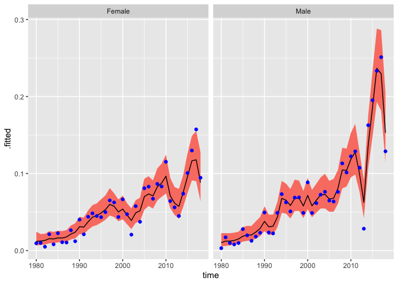

Using Bayesian methods, smooth demographic rates over age and time. Internally, calculations are done using TMB.
Installation
Install the development version of BayesRates from GitHub with:
# install.packages("devtools")
devtools::install_github("junnizhang/BayesRates")Example
Smooth Chinese data on divorce rates
library(BayesRates)
results <- smooth_agetime(nevent_df = cn_divorces,
py_df = cn_population,
spec_time = TimeFixed(),
byvar = "sex")
results
#> --- Object of class "BayesRates_results" ---
#>
#> nevent ~ Poisson(rate * py)
#> log(rate) = age_effect + time_effect
#> age_effect ~ Spline()
#> time_effect ~ TimeFixed()
#>
#> agevar: age
#> timevar: time
#> byvar: sex
#> n_draw: 1000Extract rates
rates <- augment(results)
head(rates)
#> # A tibble: 6 × 11
#> age sex time nevent py age.mid .fitted .lower .upper .probability
#> <int> <chr> <int> <int> <dbl> <dbl> <dbl> <dbl> <dbl> <list>
#> 1 15 Female 1980 0 489. 15.5 9.33e-6 2.55e-6 3.40e-5 <dbl>
#> 2 15 Female 1981 0 494. 15.5 9.34e-6 2.69e-6 3.36e-5 <dbl>
#> 3 15 Female 1982 0 462. 15.5 1.03e-5 3.04e-6 3.34e-5 <dbl>
#> 4 15 Female 1983 0 496. 15.5 1.19e-5 3.58e-6 4.03e-5 <dbl>
#> 5 15 Female 1984 0 496. 15.5 1.17e-5 3.41e-6 3.80e-5 <dbl>
#> 6 15 Female 1985 0 514. 15.5 1.28e-5 3.65e-6 4.21e-5 <dbl>
#> # ℹ 1 more variable: .observed <dbl>Calculate ‘total divorce rate’, and plot it
total_divorce_rate <- total_rate(results)
ggplot(total_divorce_rate,
aes(x = time, y = .fitted, ymin = .lower, ymax = .upper)) +
facet_wrap(vars(sex)) +
geom_ribbon(fill = "salmon") +
geom_line() +
geom_point(aes(y = .observed), col = "blue")